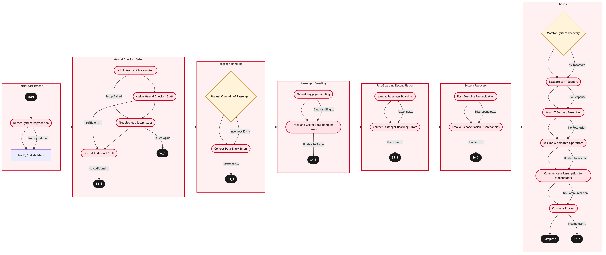

Updated 2026-08-21
DCS Degraded Mode and Manual Fallback
Process flow
Click to zoom

Process steps
▼
Phase 1 — Initial Assessment
2 steps
| Step | Activity | Role | System | Input | Output | KPI | Dec | Exc | Pain point |
|---|---|---|---|---|---|---|---|---|---|
| 1.1 | Detect System Degradation | YYZ Operations Control Duty Manager | Amadeus Altea DCSA | System health monitoring tools | Degradation report | Time to detect system failure < 5 minutes | N | Y | Delayed detection can cause operational disruptions. |
| 1.2 | Notify Stakeholders | YYZ Operations Control Duty Manager | Intranet messaging systemU | Degradation report | Stakeholder notification | Time to notify stakeholders < 10 minutes | N | N | Lack of timely communication can lead to confusion. |
▼
Phase 2 — Manual Check-in Setup
4 steps
| Step | Activity | Role | System | Input | Output | KPI | Dec | Exc | Pain point |
|---|---|---|---|---|---|---|---|---|---|
| 2.1 | Set Up Manual Check-in Area | Baggage Reconciliation Agent | Manual check-in formsU | Passenger list and baggage manifest | Manual check-in area setup | Time to set up manual check-in area < 15 minutes | N | Y | Manual forms can be prone to errors if not handled carefully. |
| 2.2 | Assign Manual Check-in Staff | Baggage Reconciliation Agent | CUPPSC | Staff roster and passenger list | Assigned staff checklist | Time to assign staff < 5 minutes | N | Y | Inadequate staffing can lead to long queues. |
| 2.3 | Troubleshoot Setup Issues | Baggage Reconciliation Agent | Manual check-in formsU | Error logs and manual check-in area setup | Resolved setup issues | Time to resolve setup issues < 10 minutes | N | Y | Persistent issues can delay operations. |
| 2.4 | Recruit Additional Staff | Baggage Reconciliation Agent | CUPPSC | Staff roster and passenger list | Additional staff assigned | Time to recruit additional staff < 10 minutes | N | Y | Difficulty in finding available staff can cause delays. |
▼
Phase 3 — Baggage Handling
2 steps
| Step | Activity | Role | System | Input | Output | KPI | Dec | Exc | Pain point |
|---|---|---|---|---|---|---|---|---|---|
| 3.1 | Manual Check-in of Passengers | Baggage Reconciliation Agent | Manual check-in formsU | Passenger details and baggage manifests | Checked-in passengers list | Time per passenger < 3 minutes | Y | N | Manual data entry is slow and error-prone. |
| 3.2 | Correct Data Entry Errors | Baggage Reconciliation Agent | Manual check-in formsU | Checked-in passengers list and error logs | Corrected checked-in passengers list | Time to correct errors < 5 minutes | N | Y | Errors can lead to passenger confusion. |
▼
Phase 4 — Passenger Boarding
2 steps
| Step | Activity | Role | System | Input | Output | KPI | Dec | Exc | Pain point |
|---|---|---|---|---|---|---|---|---|---|
| 4.1 | Manual Baggage Handling | Baggage Reconciliation Agent | SITA WorldTracerB | Checked-in passengers list and baggage manifests | Handed-over bags | Time per bag < 2 minutes | N | Y | Mis-handling can occur without automated tracking. |
| 4.2 | Trace and Correct Bag Handling Errors | Baggage Reconciliation Agent | SITA WorldTracerB | Bag handling logs and passenger details | Corrected bag handling records | Time to trace and correct errors < 10 minutes | N | Y | Errors can cause delays in boarding. |
▼
Phase 5 — Post-Boarding Reconciliation
2 steps
| Step | Activity | Role | System | Input | Output | KPI | Dec | Exc | Pain point |
|---|---|---|---|---|---|---|---|---|---|
| 5.1 | Manual Passenger Boarding | Boarding Agent | Manual boarding formsU | Checked-in passengers list and boarding manifests | Boarded passengers list | Time per passenger < 2 minutes | N | Y | Misboarding can occur without automated systems. |
| 5.2 | Correct Passenger Boarding Errors | Boarding Agent | Manual boarding formsU | Boarded passengers list and error logs | Corrected boarded passengers list | Time to correct errors < 5 minutes | N | Y | Errors can cause delays in takeoff. |
▼
Phase 6 — System Recovery
2 steps
| Step | Activity | Role | System | Input | Output | KPI | Dec | Exc | Pain point |
|---|---|---|---|---|---|---|---|---|---|
| 6.1 | Post-Boarding Reconciliation | Baggage Reconciliation Agent | Baggage Reconciliation SystemC | Checked-in passengers list and boarded passengers list | Reconciled passenger data | Time to reconcile data < 10 minutes | N | Y | Data discrepancies can lead to miscommunication. |
| 6.2 | Resolve Reconciliation Discrepancies | Baggage Reconciliation Agent | Baggage Reconciliation SystemC | Reconciled passenger data and error logs | Resolved reconciliation issues | Time to resolve discrepancies < 10 minutes | N | Y | Errors can cause further delays. |
▼
Phase 7 — Phase 7
6 steps
| Step | Activity | Role | System | Input | Output | KPI | Dec | Exc | Pain point |
|---|---|---|---|---|---|---|---|---|---|
| 7.1 | Monitor System Recovery | YYZ Operations Control Duty Manager | Amadeus Altea DCSA | System recovery status | Recovery report | Time to detect system recovery < 5 minutes | Y | N | Delayed recovery can cause operational disruptions. |
| 7.2 | Escalate to IT Support | YYZ Operations Control Duty Manager | Intranet messaging systemU | Recovery report and error logs | Escalation ticket | Time to escalate < 10 minutes | N | Y | Lack of escalation can prolong downtime. |
| 7.3 | Await IT Support Resolution | YYZ Operations Control Duty Manager | Intranet messaging systemU | Escalation ticket and support updates | Resolved recovery report | Time to resolution < 60 minutes | N | Y | Slow support response can cause prolonged disruptions. |
| 7.4 | Resume Automated Operations | YYZ Operations Control Duty Manager | Amadeus Altea DCSA | Resolved recovery report and system status | Automated operations resumed | Time to resume automated operations < 15 minutes | N | Y | Delayed resumption can cause further disruptions. |
| 7.5 | Communicate Resumption to Stakeholders | YYZ Operations Control Duty Manager | Intranet messaging systemU | Resolved recovery report | Stakeholder communication | Time to communicate < 10 minutes | N | Y | Lack of communication can cause confusion. |
| 7.6 | Conclude Process | YYZ Operations Control Duty Manager | Intranet messaging systemU | Stakeholder communication | Process conclusion | Time to conclude < 5 minutes | N | Y | No clear conclusion can lead to ongoing confusion. |
Swim lanes
YYZ Operations Control Duty Manager1.1 1.2 7.1 7.2 7.3 7.4 7.5 7.6
Baggage Reconciliation Agent2.1 2.2 2.3 2.4 3.1 3.2 4.1 4.2 6.1 6.2
Boarding Agent5.1 5.2
Systems touched
Amadeus Altea DCSAIntranet messaging systemUManual check-in formsUCUPPSCSITA WorldTracerBManual boarding formsUBaggage Reconciliation SystemC
Key performance indicators
- Time to detect system failure < 5 minutes
- Time to notify stakeholders < 10 minutes
- Time to set up manual check-in area < 15 minutes
- Time to assign staff < 5 minutes
- Time to resolve setup issues < 10 minutes
Risks and control points
- Delayed detection of system failure leading to operational disruptions.
- Errors in manual data entry causing passenger confusion.
- Mis-handling of baggage without automated tracking leading to delays.
- Persistent errors during boarding causing takeoff delays.
- Data discrepancies in post-boarding reconciliation leading to miscommunication.
Air Canada Process Wiki — process and systems reference compiled from public sources
for IT Application Management and User Support pre-sales discovery.
Built 2026-08-21. Every system carries an evidence tier: tier C is an industry pattern and tier U is an open
question, and neither should be asserted as fact about Air Canada without confirmation in discovery.
Not affiliated with or endorsed by Air Canada. Air Canada, Aeroplan and Altitude are trademarks of Air Canada.